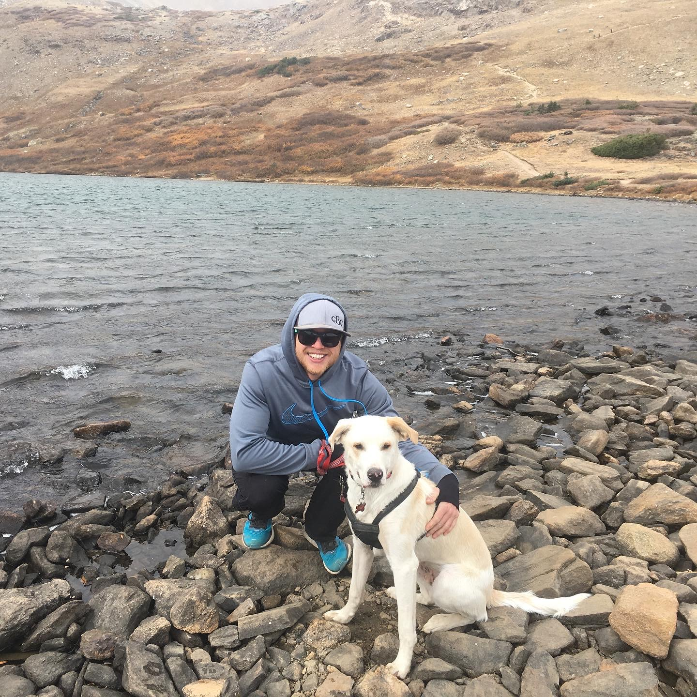
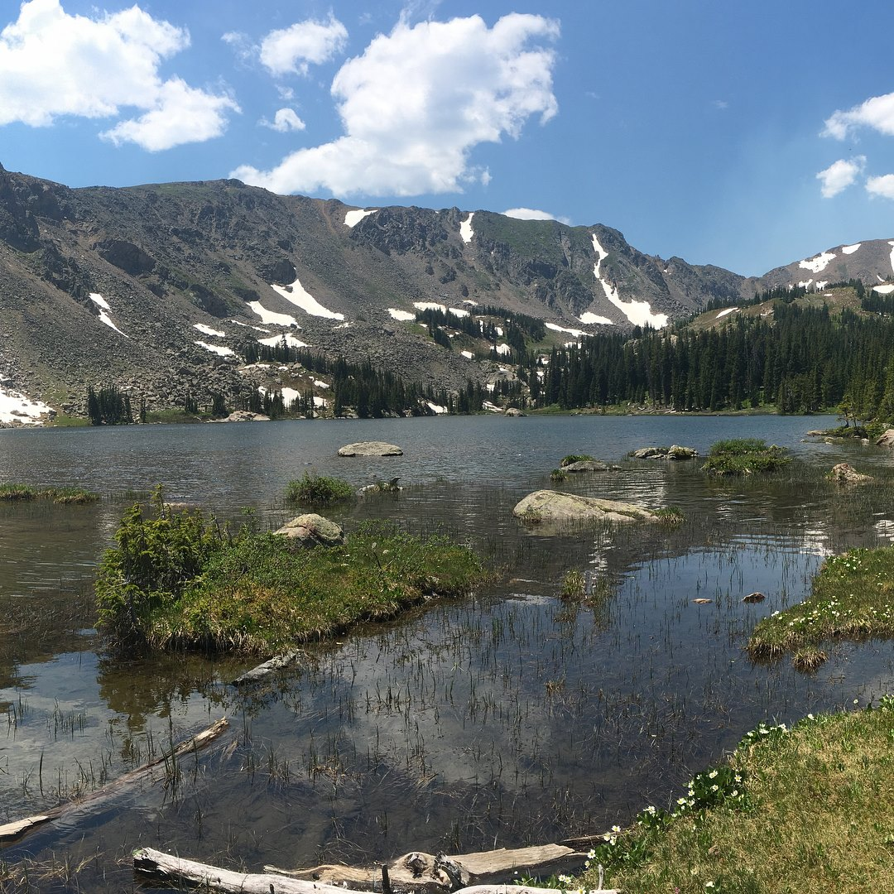
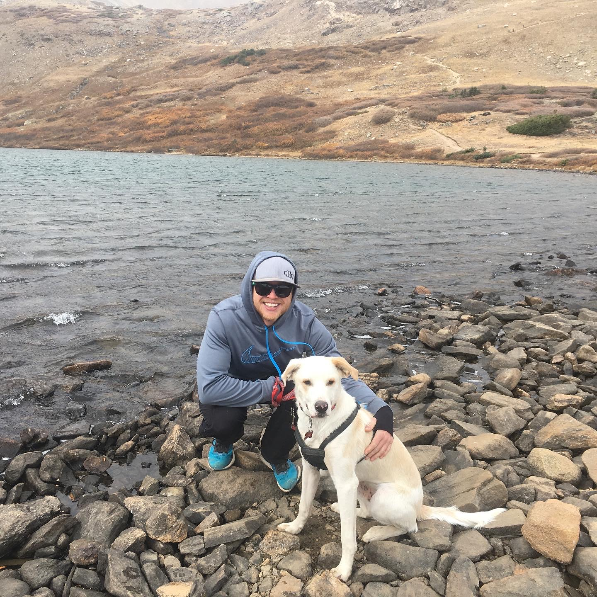
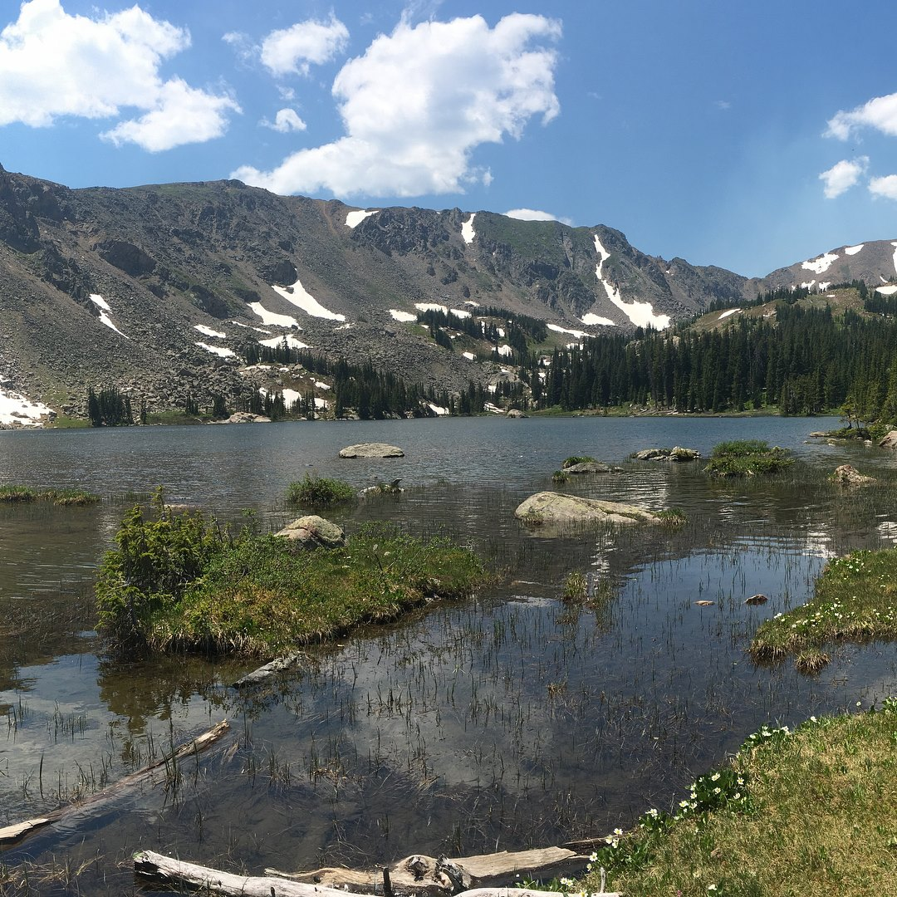

My name is Chase Follett and I am currently enrolled in the full-stack web development program through the University
of Denver. Originally from Ohio, I relocated to Colorado in September of 2017 after graduating from Ohio University with
an undergraduate degree in Political Science and minor in Philosophy. Outside of school, I have been involved in Aquatics
Safety and Aquatics Management for over 10 years. Safety in and around the water has always been a passion of mine and I
have loved sharing my wealth of knowledge in aquatics safety, pool maintenance, and chemistry with my guards. I have always
taken pride in having had lifeguards who take the position seriously, are top-notch on thier skills, and always prepared
should an emergency arise. In my 10 years in Aquatics, I have managed several different facilities; both indoor and outdoor,
and never had a major emergency that my staff was not prepared to handle. From the safety aspect, to the skill and teambuilding,
Aquatics has been a very rewarding field for me over the last 10 years. I have trained and worked with many amazingly talented
guards and swim instructors and it has allowed me to develope my skills are a leader and role model. I am even more excited to
take the skills I have learned over the past ten years and applying it to Full-Stack Web Development and all the skills we come
away with from the Coding Bootcamp.
In my free time, I love to go on hikes with my puppy, Winston. I am working on hitting all the best hikes in Colorado and have
already done a few amazing ones like Silver Dollar Lake, Lost Lake and some amazing trails in Rocky Mountain National Park. In addition
to hiking, I am an avid runner and can be found out running some trails in my free time. I have competed in four marathons, three half
marathons, and completed the Boulder-Boulder 10k for the first time in 2018. Besides trail running, I am currently working on attaining my
Personal Training Certification from ACE Fitness to help further my understanding of the humanbody, exercise, and how the two connect. I
am very passionate about fitness and am routinely in the gym 5-days a week, if I am not on the trails. I enjoy the regiment of marathon training
and love to share my passion for health and fitness with others. Besides fitness, I am also an avid guitar player and love to attend concerts
when they are in the area.


 


